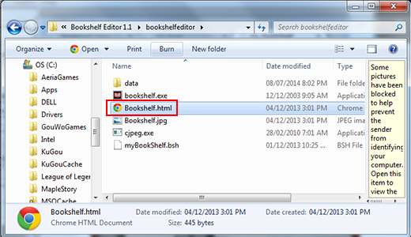
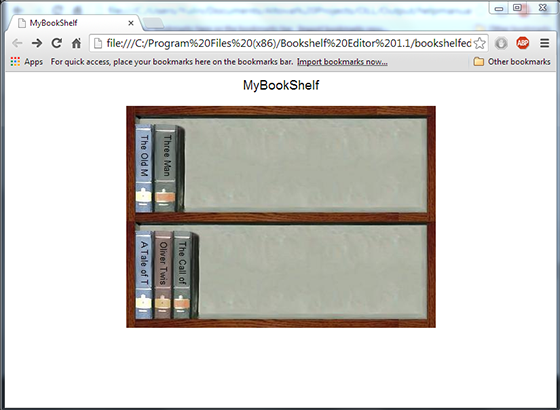

> Opening and Using your Bookshelf >
Opening the bookshelf in your browser
9.1. Opening the bookshelf in your browser
To open the bookshelf in your browser:
- Locate the file Bookshelf.html in Windows Explorer.
- Double-click Bookshelf.html.
The default browser will opens to your bookshelf web page.
